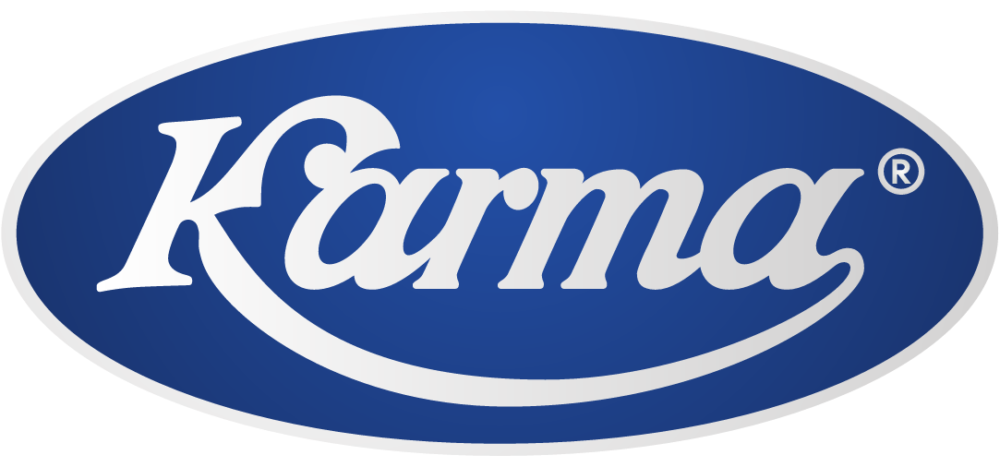
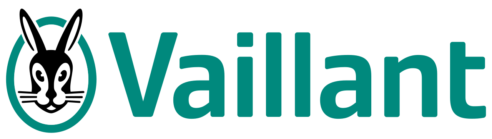

Značky které servisujeme




Kvalitní opravy, údržba a kontroly s certifikací VIESSMANN, BOSCH - JUNKERS a dalších výrobců. Věříme na dlouhodobé vztahy se zákazníky.
Více než 30 let zkušeností v oboru plynových systémů
Poskytujeme kvalitu ověřenou výrobcem. Jsme autorizovaným servisem pro nejznámější značky na trhu.
Naši servisní technici prošli školením u výrobců. Řeší problémy kvalitně a na dlouho.
Dispečink v pracovních dnech 8-16 h. Havarijní služba mimo pracovní dny 8-18 h. Vždy na vás máme čas.
Od oprav až po instalace na klíč. Servis kotlů, regulace, revize – vše na jednom místě.
Kompletní spektrum služeb pro vaše plynové spotřebiče
Pravidelný servis, údržba a opravy plynových kotlů všech značek. Zajišťujeme bezpečný a ekonomický provoz.
Profesionální instalace nových plynových kotlů. Od výběru vhodného typu až po spuštění – vše na klíč.
Odborná montáž komínových systémů pro kondenzační kotle. Zajistíme správný odvod spalin a bezpečný provoz.
Kompletní řešení ústředního topení včetně radiátorů, regulace a rozvodů. Moderní a efektivní vytápění.


VIESSMANN (a další značky) nabízí možnost moderního ovládání přes aplikace v mobilních telefonech.
Rok 1989 – Karel Chalupný starší začíná opravovat plynové spotřebiče po pracovní době. Nejdříve v garáži, pak v pronajatých prostorách. Jméno Chalupný se rychle dostává v Hradci Králové do povědomí. Zákazníci jej rádi doporučují dál – nekomplikuje, pracuje kvalitně a ceny jsou férové.
Roku 1993 přichází školení od společnosti Junkers. Oba Chalupní – otec i syn – se vydávají do Prahy. Pak následuje školení u Mora Moravia. Servisní činnost se výrazně rozšiřuje. V roce 1997 zakládá Karel Chalupný mladší společnost STT s.r.o. (Servis Tepelné Techniky), kterou je dodnes vlastníkem a jednatelem.
V roce 2015 se firma přestěhuje do moderního objektu na adrese Jiřího Purkyně 353 – lukrativního místa v centru blízko areálu Bavlna. Dnes STT s.r.o. není jen certifikovaným servisem Junkers – poskytuje komplexní služby včetně instalací „na klíč", údržby kotelenských zařízení a průmyslového vytápění.